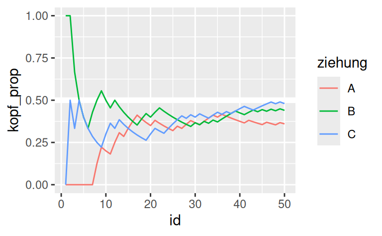

Ein Glücksspieler will ausprobieren, ob er einer Münze befehlen kann mit Kopf nach oben zu laden (wäre ja praktisch).
Er überlegt sich als Experiment, eine Münze 50 Mal zu werfen und jedes Mal konzentriert “Kopf!” zu befehlen.
Da er aber auch Realist ist, überlegt er sich, wie hoch die Wahrscheinlichkeit ist, per Zufall so oft “Kopf” zu bekommen.
Er hat gehört, dass bei vielen Wissenschaftlern ein Ereignis, dass eine Wahrscheinlichkeit von weniger als 5% hat, als “signifikant” gilt und als Beleg für einen Effekt gilt, in dem Fall wäre der Effekt seine Münz-Befehl-Zauberkraft.
Als Erstes kommt der langweilige Teil: Er wirft 100 Mal 50 Münzen, um sich ein “Gefühl” für “typische” Ergebnisse zu bekommen. Puh! Sehnenscheidenentzündung, und überhaupt, diese ganzen unhygienischen Münzen…
Einen Münzwurf kann man auch als “Bernoulli-Experiment” bezeichnen.
Werfen wir also \(n=50\) Münzen mit R. “Kopf” sei das Ereignis, das wir suchen:
replicate() wiederholt (repliziert) einen Ausdruck (expression) n Mal.
Tabellieren wir dieses Ergebnis, und spaßeshalber, lassen wir unseren Glücksspieler den Versuch jetzt 1000 Mal durchführen (zum Glück mit Hilfe des Computers):
Mit set.seed(42) legen wir die Generierung von Zufallszahlen auf eine bestimmte Auswahl fest. Diese Zeile ist nur dazu dar, damit Sie die exakt gleichen Ergebnisse bekommen wie in diesem Text. Ansonsten würden Ihre Ergebnisse leicht abweichen - schließlich sind es ja zufällige Ereignisse.
Unser Glücksspieler resümiert: “Ah, so alles über 30 Treffer, also 60% Trefferquote, scheint etwas besonderes zu sein, kommt zumindest selten vor!”.
Aber kann man den Weg zum Glück nicht abkürzen?
Er nimmt sich seine 50 Münzen und wirft sie hintereinander. Dabei notiert er sich den kumulativen Anteil von Kopf (s. Diagramm).
“Falls ich vorzeitig einen Anteil von über 60% Kopf habe, breche ich die Ziehung einfach ab, werfe also nicht 50 Mal, sondern weniger, und berichte einfach nur dieses Experiment!”, denkt sich unser Glücksspieler.
d3 %>%ggplot(aes(x = id, y = kopf_prop, color = ziehung)) +geom_hline(yintercept = .5, color ="white", size =2) +geom_line()

Frage
Würde es dem Glücksspieler etwas bringen, vorzeitig den Versuch zu stoppen, also weniger als 50 Mal die Münze zu werfen?
Zur Erinnerung: Sein Ziel ist es, einen hohen Anteil von “Kopf” zu werfen.
Answerlist
Nein, der Anteil von Kopf ist in konstant über die 50 Münzwürfe (für jede der drei Ziehungen).
Nein, der Anteil von Kopf sinkt im Laufe der 50 Münzwürfe (für jede der drei Ziehungen).
Ja, es gibt Würfe, bei denen der Anteil der (kumulierten) “Kopf-Ergebnisse” höher ist als der sich stabilisierende Mittelwert.
Solution
Tatsächlich: Seine Rechnung geht auf. Betrügen ist möglich: Zu einigen Zeiten ist der Mittelwert oberhalb des langfristig zu erwartenden Mittelwert (hier ist der zu erwartende Mittelwert 50%).
Daher sollte ein Experiment vorab angeben, wie groß die Stichprobe ist.
Dieser vorab geplante Stichprobenwert sollte dann an ein Gremium eingereicht werden, bevor die Datenerhebung beginnt. Das nennt man auch “preregistration”.
---title: optionalstoppingcategories:- paper- todo---```{r libs, include = FALSE}library(tidyverse)#library(glue)options(mc.cores = parallel::detectCores())``````{r global-knitr-options, include=FALSE}knitr::opts_chunk$set(fig.pos ='H',fig.asp =0.618,fig.width =4,fig.cap ="", fig.path ="",echo =TRUE,message =FALSE,fig.show ="hold")library(tidyverse)```Question========Ein Glücksspieler will ausprobieren,ob er einer Münze befehlen kann mit Kopf nach oben zu laden (wäre ja praktisch).Er überlegt sich als Experiment, eine Münze 50 Mal zu werfen und jedes Mal konzentriert "Kopf!" zu befehlen.Da er aber auch Realist ist,überlegt er sich, wie hoch die Wahrscheinlichkeit ist, per Zufall so oft "Kopf" zu bekommen.Er hat gehört, dass bei vielen Wissenschaftlern ein Ereignis, dass eine Wahrscheinlichkeit von weniger als 5% hat,als "signifikant" gilt und als Beleg für einen Effekt gilt, in dem Fall wäre der Effekt seine Münz-Befehl-Zauberkraft.Als Erstes kommt der langweilige Teil:Er wirft 100 Mal 50 Münzen, um sich ein "Gefühl" für "typische" Ergebnisse zu bekommen.Puh! Sehnenscheidenentzündung, und überhaupt, diese ganzen unhygienischen Münzen...Einen Münzwurf kann man auch als "Bernoulli-Experiment" bezeichnen.Werfen wir also $n=50$ Münzen mit R. "Kopf" sei das Ereignis, das wir suchen: ```{r}rbernoulli(n =50)```Zählen wir die Treffer (Anzahl Kopf):```{r}rbernoulli(n =50) %>%sum()```Die obige Zeile könnten wir jetzt 100 Mal tippen (Sehnenscheidenentzündung)...Oder ... wir probieren es cleverer:```{r}replicate(n =100, expr =rbernoulli(n =50) %>%sum())````replicate()` wiederholt (repliziert) einen Ausdruck (`expr`ession) `n` Mal.Tabellieren wir dieses Ergebnis, und spaßeshalber, lassen wir unseren Glücksspieler den Versuch jetzt 1000 Mal durchführen (zum Glück mit Hilfe des Computers):```{r}set.seed(42)oft_50_muenzen <-replicate(n =1000, expr =rbernoulli(n =50) %>%sum())tibble(oft_50_muenzen) %>%count(oft_50_muenzen)```Mit `set.seed(42)` legen wir die Generierung von Zufallszahlen auf eine bestimmte Auswahl fest.Diese Zeile ist nur dazu dar, damit Sie die exakt gleichen Ergebnisse bekommen wie in diesem Text.Ansonsten würden Ihre Ergebnisse leicht abweichen - schließlich sind es ja zufällige Ereignisse.Unser Glücksspieler resümiert: "Ah, so alles über 30 Treffer, also 60% Trefferquote, scheint etwas besonderes zu sein, kommt zumindest selten vor!".Aber kann man den Weg zum Glück nicht abkürzen?Er nimmt sich seine 50 Münzen und wirft sie hintereinander. Dabei notiert er sich den kumulativen Anteil von Kopf (s. Diagramm)."Falls ich vorzeitig einen Anteil von über 60% Kopf habe, breche ich die Ziehung einfach ab, werfe also nicht 50 Mal, sondern weniger, und berichte einfach nur dieses Experiment!", denkt sich unser Glücksspieler.Mal sehen, ob seine Rechnung aufgeht:```{r}d2 <-tibble(kopf =rbernoulli(150),ziehung =c(rep("A", 50), rep("B", 50), rep("C", 50)),id =c(1:50, 1:50, 1:50))``````{r}d3 <- d2 %>%group_by(ziehung) %>%mutate(kopf_sum =cumsum(kopf),kopf_prop =cummean(kopf))``````{r}d3 %>%ggplot(aes(x = id, y = kopf_prop, color = ziehung)) +geom_hline(yintercept = .5, color ="white", size =2) +geom_line()```# FrageWürde es dem Glücksspieler etwas bringen, vorzeitig den Versuch zu stoppen,also *weniger* als 50 Mal die Münze zu werfen?Zur Erinnerung: Sein Ziel ist es, einen hohen Anteil von "Kopf" zu werfen.Answerlist----------* Nein, der Anteil von Kopf ist in konstant über die 50 Münzwürfe (für jede der drei Ziehungen).* Nein, der Anteil von Kopf sinkt im Laufe der 50 Münzwürfe (für jede der drei Ziehungen).* Ja, es gibt Würfe, bei denen der Anteil der (kumulierten) "Kopf-Ergebnisse" höher ist als der sich stabilisierende Mittelwert.Solution========Tatsächlich: Seine Rechnung geht auf. Betrügen ist möglich:Zu einigen Zeiten ist der Mittelwert oberhalb des langfristig zu erwartenden Mittelwert (hier ist der zu erwartende Mittelwert 50%).Daher sollte ein Experiment *vorab* angeben, wie groß die Stichprobe ist.Dieser vorab geplante Stichprobenwert sollte dann an ein Gremium eingereicht werden,bevor die Datenerhebung beginnt.Das nennt man auch "preregistration".* Falsch* Falsch* RichtigAufgabenname: `optionalstopping`Meta-information================exname: optionalstoppingextype: schoiceexsolution: 001exshuffle: falseextol: 1expoints: 1